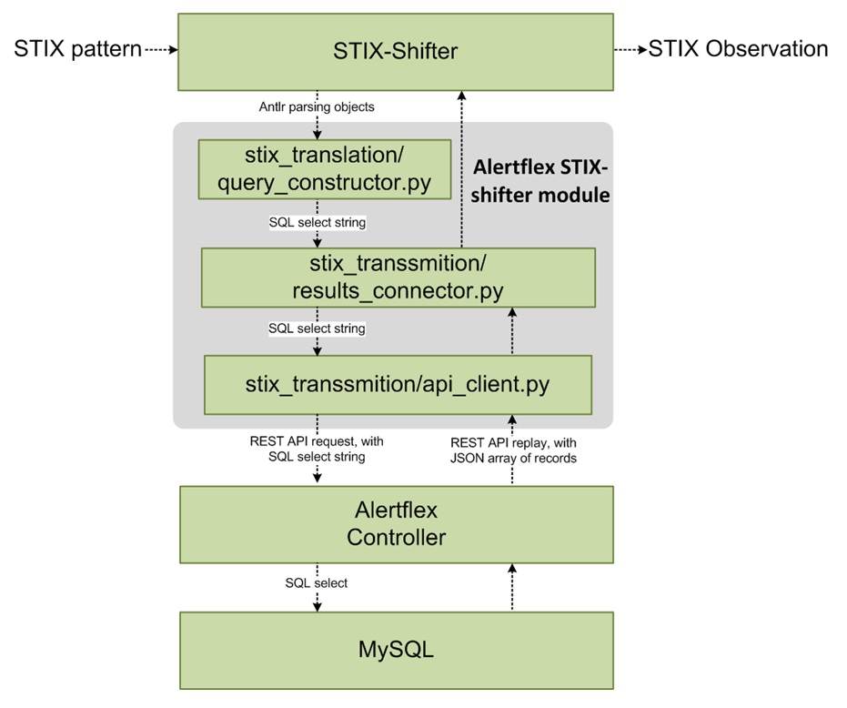

STIX-shifter is an open source python library allowing software to connect to products that house data repositories by using STIX Patterning, and return results as STIX Observations. STIX 2 Patterning is a part of STIX that deals with the "matching things" part of STIX, which is an integral component of STIX Indicators. In addition to "finding" the data by using these patterns, STIX-Shifter uniquely also transforms the output into STIX 2 Observations. Why would we do that you ask? To put it simply - so that all of the security data, regardless of the source, mostly looks and behaves the same. STIX-shifter is a part of Open Cybersecurity Alliance Ecosystem
Describe the process of integration AlertFlex and STIX-Shifter open-source projects. Shows how STIX-Shifter input (STIX pattern) transformed and modified by the Alertflex STIX-shifter module and Alertflex Controller to return results (alerts) as STIX Observations.
From STIX-Shifter perspective, the Alertflex is an alert feeder/supplier. At this moment Alertflex be able to aggregate, filter, normalized and store of alerts and reports from 17 different type of security applications (mostly free open source projects).
Alertflex STIX-Shifter module is based on the Synchronous-Dummy module that provided with STIX-shifter as an example. Synchronous-Dummy module already includes logic for translation STIX pattern to SQL request, therefore Alertflex was modified from this module with minimal changes.
STIX PATTERN: [file:name = ‘/etc/altprobe/altprobe.yaml’] based on JSON description of alert in file from_stix_map.json :
{
"ipv4-addr": {
"fields": {
"value": ["a.dstIp", "a.srcIp"]
}
},
"network-traffic": {
"fields": {
"src_port": ["a.srcPort"],
"dst_port": ["a.dstPort"],
"src_ref": ["a.srcIp"],
"dst_ref": ["a.dstIp"]
}
},
"file": {
"fields": {
"name": ["a.fileName"],
"hashes.SHA-256": ["a.hashSha256"],
"hashes.SHA-1": ["a.hashSha1"],
"hashes.MD5": ["a.hashMd5"]
}
},
"process": {
"fields": {
"name": ["a.processName"],
"pid": ["a.processId"]
}
},
"user-account":{
"fields": {
"user_id": ["a.userName"]
}
},
"x_org_alertflex" : {
"fields": {
"agent": ["a.agentName"],
"node": ["a.nodeId"],
"source": ["a.alertSource"],
"type": ["a.alertType"],
"id": ["a.eventId"],
"severity": ["a.alertSeverity"]
}
}
}
Alertflex module translates pattern to SQL REQUEST: SELECT a FROM Alert a WHERE a.fileName = ‘/etc/altprobe/altprobe.yaml'. Every field that presented in file from_stix_map.json can be criteria searching for alerts in Alertflex DB.
Alertflex Controller translates records from Alert table to JSON array of records and returns it as a result of the REST request from STIX shifter module. Below you can see the Alert table and an example of a response from Alertflex Controller. JSON fields directly correspond to fields in Alert table.
CREATE TABLE `alert` (
`alert_id` bigint(20) unsigned NOT NULL AUTO_INCREMENT,
`alert_uuid` char(37) NOT NULL DEFAULT '',
`ref_id` varchar(255) NOT NULL DEFAULT '',
`node_id` varchar(255) NOT NULL DEFAULT '',
`sensor_id` varchar(512) NOT NULL DEFAULT '',
`categories` varchar(1024) NOT NULL DEFAULT '',
`description` varchar(1024) NOT NULL DEFAULT '',
`alert_severity` int(10) unsigned NOT NULL DEFAULT '0',
`alert_source` varchar(32) NOT NULL DEFAULT '',
`alert_type` varchar(32) NOT NULL DEFAULT '',
`event_id` varchar(512) NOT NULL DEFAULT '',
`event_severity` int(10) unsigned NOT NULL DEFAULT '0',
`src_ip` varchar(128) NOT NULL DEFAULT '',
`dst_ip` varchar(128) NOT NULL DEFAULT '',
`src_hostname` varchar(128) NOT NULL DEFAULT '',
`dst_hostname` varchar(128) NOT NULL DEFAULT '',
`src_port` int(10) unsigned NOT NULL DEFAULT '0',
`dst_port` int(10) unsigned NOT NULL DEFAULT '0',
`file_name` varchar(512) NOT NULL DEFAULT '',
`file_path` varchar(1024) NOT NULL DEFAULT '',
`hash_md5` varchar(128) NOT NULL DEFAULT '',
`hash_sha1` varchar(128) NOT NULL DEFAULT '',
`hash_sha256` varchar(512) NOT NULL DEFAULT '',
`process_id` int(10),
`process_name` varchar(512) NOT NULL DEFAULT '',
`process_cmdline` varchar(512) NOT NULL DEFAULT '',
`process_path` varchar(1024) NOT NULL DEFAULT '',
`url_hostname` varchar(512) NOT NULL DEFAULT '',
`url_path` varchar(1024) NOT NULL DEFAULT '',
`user_name` varchar(512) NOT NULL DEFAULT '',
`agent_name` varchar(512) NOT NULL DEFAULT '',
`container_id` varchar(512) NOT NULL DEFAULT '',
`container_name` varchar(512) NOT NULL DEFAULT '',
`location` varchar(1024) NOT NULL DEFAULT '',
`status` varchar(32) NOT NULL DEFAULT '',
`action` varchar(256) NOT NULL DEFAULT '',
`filter` varchar(512) NOT NULL DEFAULT '',
`info` varchar(1024) NOT NULL DEFAULT '',
`time_event` varchar(512) NOT NULL DEFAULT '',
`time_collr` datetime DEFAULT NULL,
`time_cntrl` datetime DEFAULT NULL,
`json_event` text,
PRIMARY KEY (`alert_id`)
) ENGINE=InnoDB AUTO_INCREMENT=3496 DEFAULT CHARSET=utf8;
{
'severity': 2,
'srcip': '0.0.0.0',
'agent': 'alertflex',
'create_time': 1597867109000,
'dstport': 0,
'description': 'Integrity checksum changed.',
'source': 'Wazuh',
'type': 'FILE',
'sha1': '6232e4a0f37b583182aad75d18b3a4147a54f85b',
'node': 'test01',
'protocol': 'ip',
'file': '/etc/altprobe/altprobe.yaml',
'srcport': 0,
'dstip': '0.0.0.0',
'event': '550',
'category': 'ossec, syscheck, pci_dss_11.5, hipaa_164.312.c.1, hipaa_164.312.c.2, gdpr_II_5.1.f, nist_800_53_SI.7',
'user': 'indef',
'info': 'File /etc/altprobe/altprobe.yaml',
'md5': '7d351ff6fea9e9dc100b7deb0e03fd35'
}
For translation of JSON records to STIX Observation format, STIX module uses file to_stix_map.json.
{
"create_time": [
{
"key": "first_observed",
"transformer": "EpochToTimestamp",
"cybox": false
},
{
"key": "last_observed",
"transformer": "EpochToTimestamp",
"cybox": false
}
],
"srcip":
[
{
"key": "ipv4-addr.value",
"object": "src_ip"
},
{
"key": "ipv6-addr.value",
"object": "src_ip"
},
{
"key": "network-traffic.src_ref",
"object": "nt",
"references": "src_ip"
}
],
"dstip": [
{
"key": "ipv4-addr.value",
"object": "dst_ip"
},
{
"key": "ipv6-addr.value",
"object": "dst_ip"
},
{
"key": "network-traffic.dst_ref",
"object": "nt",
"references": "dst_ip"
}
],
"srcport": {
"key": "network-traffic.src_port",
"object": "nt",
"transformer": "ToInteger"
},
"dstport": {
"key": "network-traffic.dst_port",
"object": "nt",
"transformer": "ToInteger"
},
"protocol": {
"key": "network-traffic.protocols",
"object": "nt",
"transformer": "ToLowercaseArray"
},
"domain-name": {
"fields": {
"value": ["url.domain"]
}
},
"user": {
"key": "user-account.user_id"
},
"file": {
"key": "file.name"
},
"process": {
"key": "process.name",
"object": "process"
},
"sha1": {
"key": "file.hashes.SHA-1",
"object": "file"
},
"sha256": {
"key": "file.hashes.SHA-256",
"object": "file"
},
"md5": {
"key": "file.hashes.MD5",
"object": "file"
},
"event": {
"key": "x_org_alertflex.event",
"cybox": false
},
"severity": {
"key": "x_org_alertflex.severity",
"cybox": false
},
"category": {
"key": "x_org_alertflex.category",
"cybox": false
},
"description": {
"key": "x_org_alertflex.description",
"cybox": false
},
"info": {
"key": "x_org_alertflex.info",
"cybox": false
},
"agent": {
"key": "x_org_alertflex.agent",
"cybox": false
},
"source": {
"key": "x_org_alertflex.source",
"cybox": false
},
"type": {
"key": "x_org_alertflex.type",
"cybox": false
},
"node": {
"key": "x_org_alertflex.node",
"cybox": false
}
}
Example of STIX Observations output for STIX pattern [file:name = ‘/etc/altprobe/altprobe.yaml’]
{
"type": "bundle",
"id": "bundle--a5528c1c-4407-4084-a5c0-758ed4d2c939",
"spec_version": "2.0",
"objects": [
{
"type": "identity",
"id": "identity--3532c56d-ea72-48be-a2ad-1a53f4c9c6d3",
"name": "Alertflex",
"identity_class": "events"
},
{
"id": "observed-data--131b1d84-97fc-4df3-a297-a3e0bb8db45d",
"type": "observed-data",
"created_by_ref": "identity--3532c56d-ea72-48be-a2ad-1a53f4c9c6d3",
"created": "2020-09-12T11:26:51.098Z",
"modified": "2020-09-12T11:26:51.098Z",
"objects": {
"0": {
"type": "ipv4-addr",
"value": "0.0.0.0"
},
"1": {
"type": "network-traffic",
"src_ref": "0",
"dst_port": 0,
"protocols": [
"ip"
],
"src_port": 0,
"dst_ref": "4"
},
"2": {
"type": "file",
"hashes": {
"SHA-1": "6232e4a0f37b583182aad75d18b3a4147a54f85b",
"MD5": "7d351ff6fea9e9dc100b7deb0e03fd35"
}
},
"3": {
"type": "file",
"name": "/etc/altprobe/altprobe.yaml"
},
"4": {
"type": "ipv4-addr",
"value": "0.0.0.0"
},
"5": {
"type": "user-account",
"user_id": "indef"
}
},
"x_org_alertflex": {
"severity": 2,
"agent": "alertflex",
"description": "Integrity checksum changed.",
"source": "Wazuh",
"type": "FILE",
"node": "test01",
"event": "550",
"category": "ossec, syscheck, pci_dss_11.5, hipaa_164.312.c.1, hipaa_164.312.c.2, gdpr_II_5.1.f, nist_800_53_SI.7",
"info": "File '/etc/altprobe/altprobe.yaml' modified\nMode: scheduled\nChanged attributes: size,mtime,md5,sha1,sha256\nSize changed from '3258' to '3271'\nOld modification time was: '1597867011', now it is '1597867055'\nOld md5sum was: '164ae63a5851feac8452dd6c64441c1e'\nNew md5sum is : '7d351ff6fea9e9dc100b7deb0e03fd35'\nOld sha1sum was: '820f749ae7f1335ae8a1bcaa6caebc57a2587bfb'\nNew sha1sum is : '6232e4a0f37b583182aad75d18b3a4147a54f85b'\nOld sha256sum was: '12bd2686446ea3020e44ce8365f9a30d74e9cfc66bd924932ca511900774eb38'\nNew sha256sum is : '40e12a0d40cc47f9732ed12a62c86f37e72200a709296f9d75be6d6c29e8f7bb'\n"
},
"first_observed": "2020-08-19T19:58:29.000Z",
"last_observed": "2020-08-19T19:58:29.000Z",
"number_observed": 1
}
]
}
1) Check availability of Alertflex REST interface (return code: HTTP/1.1 200 OK)
curl -k -v GET -u admin:XXXXXXX https://192.168.1.10:8181/alertflex-ctrl/rest/stix-alerts/status
2) Ping service from STIX-Shifter
python main.py transmit alertflex '{"host":"192.168.1.10", "port":"8181"}' '{"auth": {"username": "admin","password": "XXXXXXXX"}}' ping
3) Get alerts where a file’s md5 hash is “f59d75ab1986bfe011d211e0e3687831”
python main.py execute alertflex alertflex'{"type": "identity", "id": "identity--3532c56d-ea72-48be-a2ad-1a53f4c9c6d3", "name": "Alertflex", "identity_class": "events"}' '{"host":“192.168.1.10", "port":"8181"}' '{"auth": {"username": "admin","password": “XXXXXXXX"}}' "[file:hashes.MD5 = 'f59d75ab1986bfe011d211e0e3687831']"